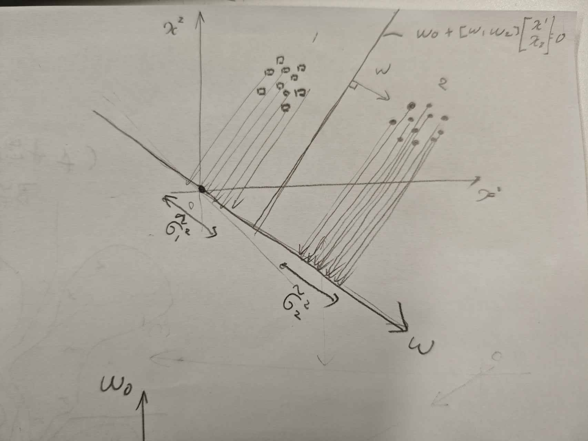

識別部の設計
ベイズ決定則
P(\omega_i | x)は未知パターンxが入力されたとき，その所属するクラスが\omega_iである確からさを示している．したがってxを識別する際に事後確率P(\omega_i | x)が最大となる\omega_iを識別結果として出力するのが最も自然である． \max_{i = 1 ,...,c} \{ P(\omega_i | x) \} =P(\omega_k | x) , x\in \omega_k が識別方となる．このような識別法をベイズ決定則と呼ぶ． NN法に当てはめて考えるとDをP(\omega_i | x)に変えたと解釈できる ベイズの定理を用いると g_i(x) = p(x | \omega_i) p(\omega_i) となる，あるいは対数をとって g_i(x) = \log p(x | \omega_i) + \log p(\omega_i) としてもよい． ## ベイズ決定則の具体例：多次元正規分布 ベイズ決定則の具体例として，尤度が多次元正規分布の場合を考える．
p(x | \omega_i) = \frac{1}{(2\pi)^{\frac d 2} |\Sigma_i|^{\frac 1 2}} \exp{\left( -\frac 1 2 (x - m_i)^T\Sigma_i^{-1}(x - m_i) \right)} これを識別関数の式に代入し,さらに比較に関係のない項を省くと
g_i(x) = (x - m_i)^T \Sigma_i^{-1}(x - m_i) - \frac 12\log|\Sigma_i|+ p(w_i) となり，識別関数はxについての二次関数になることが分かる． D^2_M = (x - m_i)^T \Sigma_i^{-1}(x - m_i)
とするとD_Mはマハラノビス汎距離と呼ばれる．
次に全クラスで分散共分散行列が等しい場合を考える． \Sigma_i = \Sigma_0 とおき，比較に関係のない項を省略すると g_i(x) = x^T\Sigma_0^{-1} m_i - \frac 1 2 m_i^T \Sigma_0^{-1}m_i + \log p(\omega_i) となる．これは明らかに線形識別関数である．
ここで，\Sigma_0を特徴量同士には相関がなく，分散が等しいとする．さらに，事前確率が各クラスで等しいとする(p(w_i) = \frac 1 c). そうするならば g_i = m_i^T x - \frac 1 2 |m_i|^2 としてよい．これはNN法で用いた最小距離識別法と一致する．
教科書にある最尤推定法はよく知られているので省略する．
識別関数の設計
線形識別関数の設計
まず識別関数に対する評価を表す関数をJとおく．境界となる超平面を定めることは，その法線ベクトルで表される軸と軸上の境界点を定めることと等価である．だが，超平面の評価は難しいので，その軸によって表される１次元空間上での各クラス\omega_i の平均と分散をそれぞれ\tilde m_i , \tilde \sigma_iとする.

クラス数が2の場合を考えると J = J(\tilde m_1 , \tilde m_2 , \tilde \sigma_1, \tilde \sigma_2) である．これを最大化しよう． 計算は省略するが，チェーンルールを用いると w \propto (s \Sigma_1 + (1 - s)\Sigma_2)^{-1} (m_1 - m_2) ただし s = \frac{ \frac{ \partial J}{\partial \tilde\sigma_1^2}}{\frac{ \partial J}{\partial \tilde\sigma_1^2} + \frac{ \partial J}{\partial \tilde\sigma_2^2} } である．